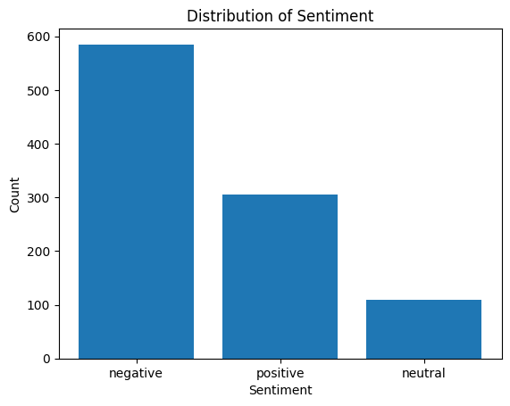

import pandas as pd
import os
df = pd.read_csv(os.path.join ("..", "data", "processed", "csv_pasado_por_llm.csv"))
df["sentiment"].value_counts()
sentiment
negative 585
positive 305
neutral 110
Name: count, dtype: int64
import matplotlib.pyplot as plt
counts = df["sentiment"].value_counts()
plt.figure()
plt.bar(counts.index, counts.values)
plt.xlabel("Sentiment")
plt.ylabel("Count")
plt.title("Distribution of Sentiment")
# Mostrar
plt.show()

from pprint import pprint
for index in range(1,30):
post= df[df["sentiment"]=="negative"].iloc[index]["post"]
display(pprint(post))
('el terrorista del eln antonio garcia quiere vivir sabroso y escribe que '
'dejara de secuestrar cuando los colombianos por conducto del titere del eln '
'petro le financien dinero sin trabajar mamooooooola tonito!!!')
None
('@byviral24 @petrogustavo @wradiocolombia ese era el cambio? mas impuestos y '
'a duque le acabaron el pais por subir 200 pesos a la gasolina, que diran los '
'q votaron por petro para vivir sabroso?')
None
('@mauriciomatri hay si chillan estos mal nacidos . llevenselo a petro para '
'que lo ponga a vivir sabroso .')
None
('@nalcocer_petro con su padrastro solo tienen paz y garantias para vivir '
'sabroso los bandidos')
None
('@millersoto @carlosfgalan querian uno que los pusiera a vivir sabroso sin '
'trabajar y les llego uno que los va a poner a trabajar para poder vivir '
'sabroso. fuera petro')
None
('@claudialopez @carlosfgalan ojala no siga ordenando al estado.. mire no mas '
'es de las pocas ,y su gabinete, que con lo acumulado y guardado podran vivir '
'muchos anos al estilo francia vivir sabroso y a manotadas')
None
('@alvarouribevel petro no le importa un carajo el empleado y el empleador,el '
'va con esta reforma es buscando adeptos,gente que cree que es mesias quiere '
'mostrar que le importa los mas explotados que son la clase trabajadora,pero '
'algun dia se veran las consecuencias y hay si vamos a vivir sabroso')
None
('@petrogustavo hoy mas de 2000 colombianos pierden su empleo formal en la '
'empresa @womcolombia empiesan a vivir el cambio.. gracias al gobierno de '
'petro y francia. sera que van a vivir sabroso?')
None
('@margaritarosadf todo opinado desde usa, desde el imperio gringo...\n'
'\n'
'pero no se viene a vivir sabroso a colombia porque va y de pronto termina '
'secuestrada por los grupos guerrilleros que apoya su mesias petro \n'
'\n'
'asi o mas hipocrita https://t.co/tw5vdnlgpj')
None
('@derlilopeza pero francia ni quita ni pone, lo de ella es vivir sabroso y '
'ya. ella no sirva pa unamonda')
None
('@derlilopeza senora es que francia alardeaba que no iba hacer lo mismo de '
'los gobiernos que tanto critican cierto??? entonces cual es la excusa, vivir '
'sabroso?')
None
('para traer africanos a vivir sabroso con tantos negros muertos de hambre en '
'choco, narino y valle, francia e s una verdadera ve rguenza para colombia y '
'el mundo https://t.co/ssfyynm13z')
None
('-marica, le dije que teniamos que unirnos a rodolfo y no a petro.\n'
'\n'
'-ah pero es que yo queria el perdon social y vivir sabroso '
'https://t.co/woxy1suevc')
None
('@soyaliciafranco el geriatrico esta dividido: las que les gusta el maltrato '
'con rodolfo, las que les gusta vivir sabroso con petro')
None
('@petrogustavo ojala la gente sepa que estan detras de artimanas para no '
'dejar que gustavo petro sea el presidente que va a trasformar a colombia '
'donde los ricos no se quede con lo que le pertenece al pueblo por derecho '
'donde se pueda vivir sabroso')
None
('@franciamarquezm estimada francia estoy buscando unos votos de personas que '
'no votaron para vivir sabroso.')
None
('@petrogustavo @xmartinagarciax la mejor forma de quitar en el medio es el '
'chisme, fajardo dijo cuanto valia la propuesta de petro y fijate que es mas '
'caro el caldo que los huevos, en fin quieren vivir sabroso sin hacer nada '
'por la patria...')
None
('@wilsonperdomov2 @ingrodolfohdez @petrogustavo aprenda a escribir primero y '
'luego hablamos.... el que tiene hambre es otro, porque no conoce la palabra '
'trabajar.... yo creo empresa y genero empleo y ud???? esta esperando el '
'cupon de comida que le va a dar petro, ese si lo va a poner a vivir '
'sabroso... claro en la inmunda')
None
('a mi no me gusta para nada el uribismo, pero lo que no entiendo es como ese '
'odio al uribismo lleve a preferir un cambio con petro... si el cambio es no '
'corrupcion, esta rodeado de los mas corruptos, si es por vivir sabroso, con '
'esa propuesta economica y el contexto lo veo dificil.')
None
('@eldudacolombia yo no creo que usted arrastrado pague impuestos, ademas fico '
'lo utiliza por trabajo, francia lo utiliza para vivir sabroso con el mozo')
None
('@miguelpolop justificando el vivir sabroso con los recursos publicos ? '
'jajaja, pero que francia si se vaya a pie para su casa')
None
('@estebanarl @julianroman ese es el q le queda, el de pendejo, no ve q se '
'dejo lavar las dos neuronas q le quedaban de petro, creyendole q iba a vivir '
'sabroso ')
None
'@mariais67967666 no voto por petro ni q me.ponga vivir sabroso'
None
('@garciaruizjo @ernestomaciast sipote castigo para rodolfo, el cucho pierde y '
'se va a vivir sabroso en el exterior, plata le sobra y ya recupero lo que '
'invirtio en su campana con la reposicion de votos. sigan promoviendo el voto '
'en blanco para que gane petro, el agradece que no vaya a votar o vote en '
'blanco.')
None
('@frvaness @alejoariasa entonces usted ni entiende ni sabe de economia. '
'retroceso en los paises que decidieron por los candidatos de la izquierda. '
'esos si estan en la inmunda. comieron cuento de vivir sabroso y estan en la '
'miserableza. petro nunca sera presidente en colombia!')
None
('no empezo bien la segunda vuelta...ya se estan atacando los dos '
'candidatos...pafrecen castrados aocmplejados ninguneados. en cambio las '
'candidatas a vicepresidentas no se tiran de los cabellos.\n'
'lo mas bacano de la campana pactista..\n'
'vivir sabroso..de francia')
None
('@anacrisrestrepo @bluradioco con esposa o sin esposa no me interesa, lo '
'unico que me interesa es salvar a colombia de un tipo tan nefasto como petro '
'y su esposa que se perpetuan en el poder para saquear el pais y vivir '
'sabroso. \n'
'prefiero una esposa en la casa, que una esposa en la calle robandole al '
'pueblo')
None
('@pedritogoenaga @cesarlondo77 eso es lo que le falta a colombia no mas '
'polarizacion de esas dos sectas ya una termino falta la de petro y hay si ha '
'vivir sabroso.')
None
('@hugoeenrique @wradiocolombia por eso petro jamas sera presidente un '
'populista que solo su plan de gobierno es inyectar odio y resentimiento no '
'es una buena opcion para colombia ...hay q mandarlo a q se vaya a vivir '
'sabroso con francia a cuba y deje de estar polarizando el pais')
None